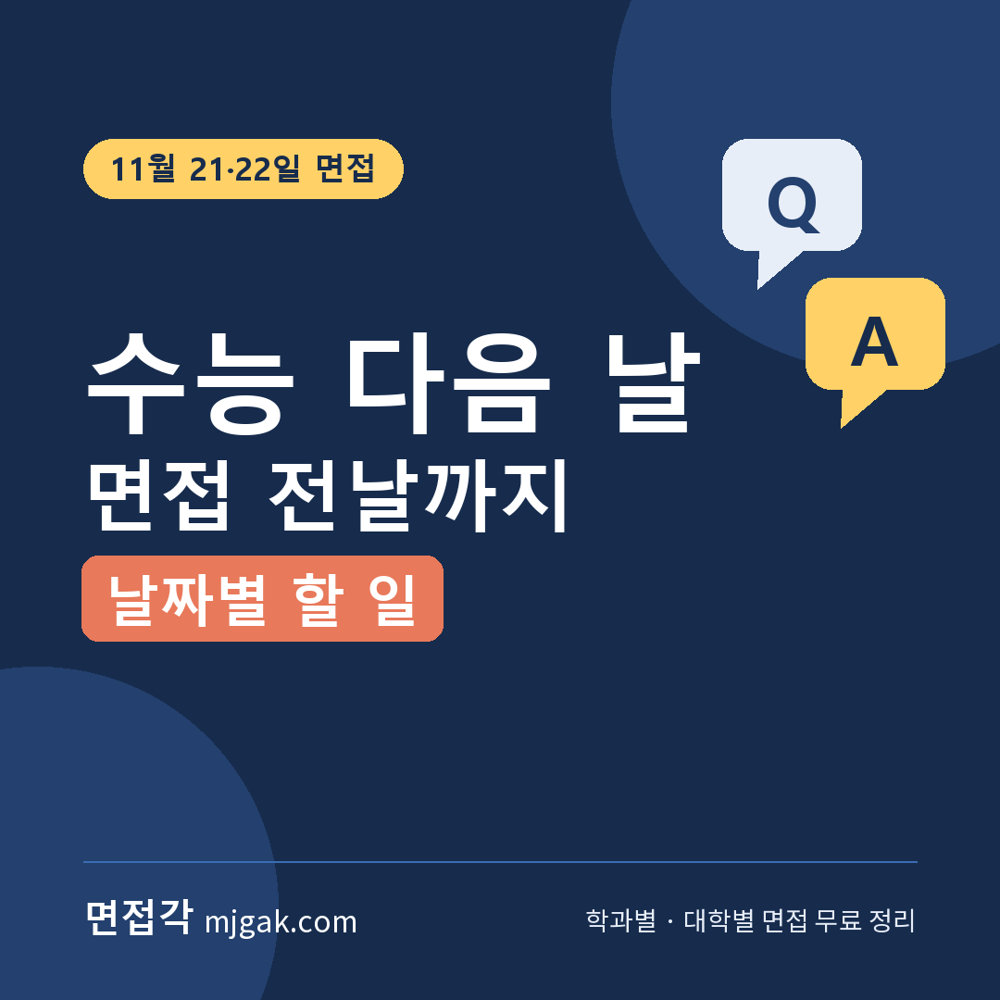
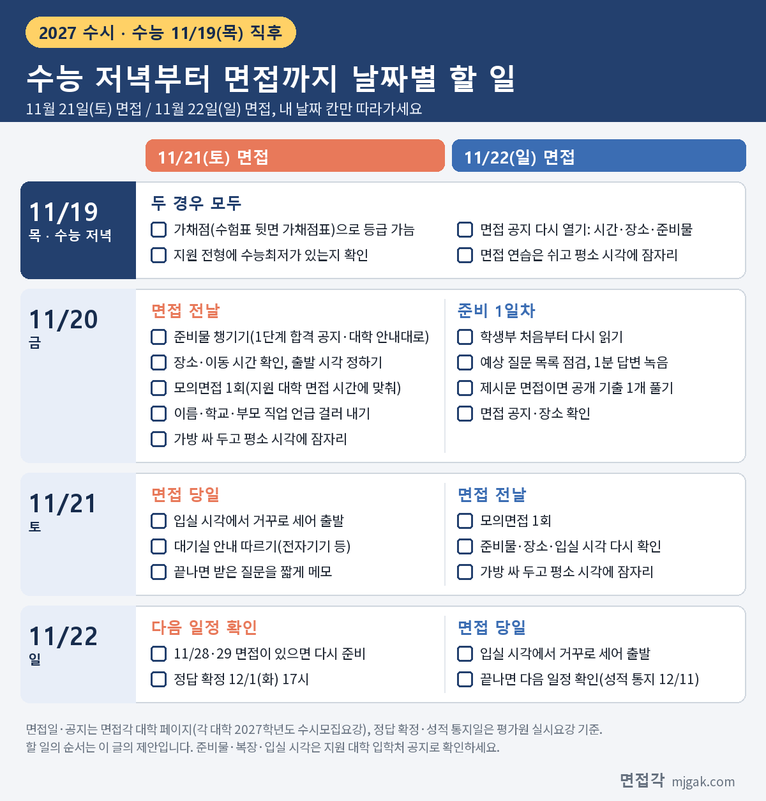

Ctrl+V (서식 유지됨)제목
본문 (이 영역 전체가 복사됩니다)
📷 여기에 이미지 넣기 — 썸네일 — thumb-aftercsat.png (대표 이미지로 지정)
2027학년도 수능은 2026년 11월 19일(목)이고, 그 주말인 11월 21일(토)·22일(일)에 수시 면접을 보는 대학이 여럿 있습니다. 21일 면접이라면 수능과 면접 사이에 남는 날은 11월 20일(금) 하루, 22일 면접이라면 20일과 21일 이틀입니다. 이 글은 그 짧은 시간을 날짜별로 나눴습니다. 수능 날 저녁에 할 세 가지, 11월 20일(금)과 21일(토)에 면접 날짜별로 할 일, 면접 당일 아침, 같은 주말에 면접이 두 곳인 경우까지 담았습니다. 대학별 면접일과 공지 날짜는 면접각이 각 대학 2027학년도 수시모집요강으로 정리한 대학 페이지 자료에서 옮겼고, 할 일의 순서는 이 글이 제안하는 방법입니다. 수능을 막 마친 고3·재수생과 이 주말 면접장까지 함께 가실 학부모님이 읽으시면 됩니다.
1. 11월 21·22일, 어느 대학이 면접을 보나
대표적인 곳만 옮기면 이렇습니다. 괄호 안은 1단계 발표일입니다.
- 11월 21일(토): 인천대 자기추천(11/6), 경북대 학생부종합 지역인재전형 등(11/6), 서울교대 교직인성우수자(11/13), 한양대 ERICA 학생부종합(면접형)(11/13), 을지대 EU면접형(11/18, 성남캠퍼스)
- 21일·22일 모집단위별: 이화여대 미래인재전형-면접형·덕성여대 덕성인재Ⅱ(11/12), 세종대 세종인재(면접형)(11/13), 성신여대 자기주도인재(11/13, 일부 모집단위는 면접이 11/28·29), 한국외대 학생부종합전형(면접형)(11/16), 인하대 인하미래인재(면접형)·국민대 국민프런티어(11/17)
- 11월 22일(일): 한양대 학생부종합(면접형) 공과대학·한양인터칼리지학부(자연)(11/13), 아주대 ACE 공과대학·첨단ICT융합대학(11/17)
위 대학들의 1단계 결과는 수능 전에 이미 나와 있습니다. 가장 이른 발표는 인천대·경북대 11월 6일(금), 가장 늦은 발표는 을지대 11월 18일(수)입니다. 그래서 수능이 끝난 뒤에는 합격 여부가 아니라 '언제, 어디서, 몇 시에'를 확인하는 일로 시작합니다. 내 모집단위가 21일인지 22일인지는 대학 페이지나 1단계 합격 공지에서 다시 보세요. 12월 면접까지 날짜순으로 모은 목록은 아래 글에 있습니다.
2. 날짜별 할 일 한눈에
아래 표에서 내 면접 날짜 칸만 따라가면 됩니다. 순서와 나누는 방법은 이 글의 제안이고, 대학이 정한 기준이 아닙니다.
📷 여기에 이미지 넣기 — 이미지 1 — aftercsat-checklist.png
3. 11월 19일(목) 수능 저녁: 세 가지만
수능을 마친 저녁에는 면접 연습보다 확인이 먼저입니다. 세 가지만 하고 쉬세요. 수능 날 저녁에 하지 못했다면 11월 20일(금) 오전에 먼저 해도 됩니다.
첫째, 가채점입니다. 문제와 정답은 매 교시가 끝난 뒤 평가원 홈페이지에 올라오고, 2027학년도 수능부터는 수험표 뒷면에 가채점표가 공식으로 들어갑니다. 옮겨 적은 답을 맞춰 영역별 등급을 가늠합니다. 가채점은 확정 성적이 아닙니다. 정답은 12월 1일(화) 17시에 확정되고, 성적은 12월 11일(금)에 통지됩니다. 11월 21·22일 면접은 모두 성적 통지 전입니다.
둘째, 내 전형에 수능최저가 있는지 봅니다. 위 대학의 면접 전형 중 이화여대 미래인재전형-면접형, 한국외대, 국민대, 세종대, 성신여대, 인천대 자기추천, 덕성여대 덕성인재Ⅱ, 을지대 EU면접형, 한양대 공과대학 면접형은 수능최저가 없고, 인하대 인하미래인재(면접형)와 한양대 ERICA 면접형은 '미적용'입니다. 반대로 서울교대 교직인성우수자는 국어·수학·영어·탐구(사회/과학) 중 2개 합 6 이내와 한국사 4등급 이내, 경북대 지역인재전형은 의예과·치의예과가 수학 포함 3개 영역 등급 합 4 이내, 약학과가 수학 포함 3개 영역 등급 합 5 이내입니다. 최저가 있는 전형이라면 가채점 등급을 기준에 대 보세요. 기준에 아슬아슬해도 확정 성적은 12월 11일에 나옵니다. 그리고 국민대·성신여대·을지대·서울교대는 면접 결시자를 불합격 처리한다고 적었습니다. 가채점만으로 면접에 갈지 말지 정하기 전에 이 두 가지를 함께 생각하세요.
셋째, 면접 공지를 다시 엽니다. 이 대학들은 수능 전에 공지 날짜를 잡아 두었습니다. 경북대는 11월 17일(화) 10시부터 고사장 안내와 수험표 출력, 인천대는 11월 18일(수)에 면접 시간·장소·준비물 발표, 한국외대와 인하대는 1단계 발표 때 입실 시간 등을 공지한다고 안내했습니다. 이화여대는 면접고사 수험생 유의사항을 11월 12일(목)에 공지할 예정이라고 적었습니다. 한양대 ERICA는 11월 17일(화)이 2단계 면접고사 접수일이었으니 접수 내역도 다시 보세요. 수능 공부로 지나쳤던 공지를 이날 저녁 한 번에 열어, 면접 날짜·입실 시각·장소·준비물을 휴대폰 메모 한 화면에 모아 둡니다.
그다음은 쉬는 시간입니다. 수능 날 저녁에 답변을 새로 외우기보다 평소 잠드는 시각에 잠자리에 드는 쪽을 권합니다. 일반적인 권유이니 몸 상태에 맞게 조절하세요.
4. 11월 20일(금): 21일 면접이면 전날, 22일 면접이면 준비 첫날
같은 금요일이라도 면접 날짜에 따라 할 일이 다릅니다.
11월 21일(토)에 면접을 본다면, 오전에는 가져갈 것과 갈 길을 정합니다. 준비물과 복장 규정은 대학마다 다르니 대학 페이지와 1단계 합격 공지에 적힌 대로 챙기세요. 장소도 확인합니다. 한국외대는 글로벌캠퍼스 모집단위 지원자도 서울캠퍼스에서 면접을 보고, 을지대 EU면접형은 성남캠퍼스, 성신여대는 돈암수정캠퍼스에서 봅니다. 지도 앱으로 이동 시간을 재고, 입실 시각에서 거꾸로 세어 출발 시각을 정합니다.
오후에는 모의면접을 한 번 합니다. 학생부를 한 번 훑고, 가족이나 친구에게 질문 순서를 섞어 물어 달라고 해서 지원 대학 면접 시간에 맞춰 답해 봅니다. 국민대 10분 이내, 인하대 8~10분 내외(의예과 제외), 세종대 9분 내외, 인천대·경북대·덕성여대 10분 내외, 성신여대 약 10분입니다. 새 답을 쓰기보다 이미 만든 답의 첫 문장을 다듬는 데 시간을 씁니다. 모의면접을 녹음해 다시 들으며 출신 고교가 드러나는 표현도 지웁니다. 세종대는 성명·수험번호·출신고교, 부모·친인척 성명과 직업을 말하면 심의에 따라 면접 점수를 0점 또는 감점 처리한다고 적었고, 서울교대도 이런 내용이나 부모의 사회적·경제적 지위를 언급하면 평가에 불이익을 받을 수 있다고 안내합니다.
세종대 창의소프트학부(디자인이노베이션·만화애니메이션텍전공)는 방식이 다릅니다. 11월 21일에 40분 동안 그날 제시된 주제로 발표자료를 만들고, 3~5분 발표한 뒤 질의응답을 합니다. 이 모집단위라면 40분 안에 자료를 만들어 발표해 보는 연습을 한 번 하세요.
저녁에는 가방을 싸고 입고 갈 옷을 정한 뒤, 평소 시각에 잠자리에 듭니다. 면접 전날 할 일과 블라인드 규정은 아래 글에 더 자세히 있습니다.
11월 22일(일)에 면접을 본다면, 20일은 준비 첫날입니다. 오전에 공지를 확인한 뒤 학생부를 처음부터 다시 읽고, 수능 전에 만들어 둔 예상 질문 목록을 꺼내 1분 답변을 한 번씩 녹음합니다. 한양대 학생부종합(면접형) 공과대학·한양인터칼리지학부(자연)는 제시문 기반 면접이고, 답변 구상과 녹화를 포함해 20분 내외의 현장 녹화 면접(비대면)입니다. 한양대는 전년도 제시문 면접 기출을 입학처 홈페이지(수시 > 기출문제 > 면접)에 공개하고 있으니, 20일에 기출 하나를 시간을 재며 풀어 보세요.
📷 여기에 이미지 넣기 — 이미지 2 — 제미나이 생성: 늦가을 오후 책상 위 빈 수험표 모양 카드·면접 메모 노트·아날로그 탁상시계·반쯤 싼 가방, 얼굴 없이 손만 나온 학생(실사) / "제미나이 프롬프트 1"
(AI로 만든 이미지로, 실제와 다를 수 있습니다)
5. 11월 21일(토): 면접 당일, 또는 면접 전날
21일 면접이라면 아침에는 새로운 것을 하지 않습니다. 정해 둔 시각에 출발하고, 대기실에서는 대학 안내를 따릅니다. 예를 들어 성신여대는 면접대기실에서 학교생활기록부만 볼 수 있고, 전자기기는 전원을 끈 뒤 보관한다고 안내합니다. 면접이 끝나면 받은 질문과 막혔던 대목을 짧게 적어 두세요. 11월 28·29일이나 12월에 다른 면접이 있다면 이 메모가 다음 준비의 출발점이 됩니다.
22일 면접이라면 21일이 전날입니다. 오전에 모의면접 한 번, 오후에 준비물·장소·입실 시각 확인, 저녁에는 가방을 싸 두고 잠자리에 듭니다. 21일에 다른 대학 면접을 보고 왔다면 그날 저녁은 22일 대학의 기본 질문 첫 문장만 소리 내어 말해 보는 정도로 줄이기를 권합니다.
6. 11월 22일(일): 면접 당일과 그 뒤 일정
22일 면접도 아침 순서는 같습니다. 면접이 끝나면 남은 날짜를 확인합니다. 수능 정답은 12월 1일(화) 17시에 확정되고, 성적은 12월 11일(금)에 통지되며, 수시 합격자 발표는 12월 18일(금)까지입니다. 수능최저가 있는 전형이라면 충족 여부는 12월 11일 성적통지표로 확정됩니다.
7. 같은 주말 두 곳이면, 시간부터 확인
21일과 22일에 각각 다른 대학 면접이 있거나, 같은 날 두 곳이 잡힐 수도 있습니다. 대학 자료에 적힌 시간대를 보면 한국외대는 서울캠퍼스 모집단위가 21일 9시~·14시~, 글로벌캠퍼스 모집단위가 22일 9시~·14시~로 나뉘고, 이화여대는 13시 20분~19시, 한양대 ERICA는 21일 14시~18시(예정), 성신여대는 오전 9시부터입니다.
개인별 시각은 따로 배정되고, 바꿀 수 없다고 적은 대학이 있습니다. 인하대는 면접 시간 변경 불가, 세종대는 입·퇴실 시간 조정 불가, 한국외대는 임의로 면접 일시·순서를 바꿀 수 없고, 성신여대는 면접 시간·순서 변경 불가입니다. 같은 날 두 곳이면 배정 시각과 이동 시간을 먼저 맞춰 보고, 둘 다 가기 어렵다면 어디를 볼지 수능 날 저녁에 정해 두세요. 면접각 내 면접 일정표에서 지원 대학을 고르면 같은 날 겹치는 면접을 표시해 줍니다.
8. 수능 직후 면접, 자주 묻는 것들
Q. 수능최저가 없는 전형인데 가채점 결과가 계속 신경 쓰여요.
A. 수능최저가 없는 전형은 수능 등급을 합격 기준으로 쓰지 않습니다. 이 주말에는 면접에 집중하고, 가채점 결과는 정시 등 다른 계획을 세울 때 쓰세요.
Q. 면접 복장과 준비물은 어떻게 정하나요?
A. 대학마다 다릅니다. 지원 대학 페이지와 1단계 합격 공지, 수험생 유의사항에 적힌 대로 준비하세요. 교복 착용을 금지한 대학이라면 교복은 입지 않습니다.
Q. 수능 전에 면접 준비를 거의 못 했어요.
A. 21일 면접이라면 20일 하루에 학생부 다시 읽기와 모의면접을 합칩니다. 오전에 학생부를 읽으며 활동마다 계기·내가 한 일·결과를 한 줄씩 적고, 오후에 그 메모로 모의면접을 합니다. 혼자라면 면접각 모의 면접에서 질문을 무작위로 뽑아 60초 타이머로 답해 볼 수 있습니다.
9. 가방 닫기 전 마지막 확인
□ 내 모집단위 면접일(21일인지 22일인지)을 다시 확인했다
□ 입실 시각과 면접 장소(캠퍼스)를 공지에서 확인했다
□ 대학이 안내한 준비물을 가방에 넣었다
□ 입실 시각에서 거꾸로 세어 출발 시각을 정했다
□ 복장 안내를 읽고 입고 갈 옷을 정했다
□ 수능최저가 있는 전형이면 가채점 등급을 기준에 대 봤다
10. 같은 시기에 면접 보는 대학
▷ 경북대 학생부종합 지역인재전형 면접 총정리 (11월 21일)
▷ 이화여대 미래인재전형 면접형 면접 총정리 (11월 21일·22일)
▷ 세종대 세종인재(면접형) 면접 총정리 (11월 21일·22일)
▷ 한국외대 학생부종합전형(면접형) 면접 총정리 (11월 21일·22일)
▷ 인하대 인하미래인재 면접 총정리 (11월 21일·22일)
▷ 국민대 국민프런티어 면접 총정리 (11월 21일·22일)
▷ 성신여대 자기주도인재 면접 총정리 (11월 21·22일, 28·29일)
▷ 한양대 학생부종합(면접형) 면접 총정리 (11월 22일·12월 5일·6일)
▷ 아주대 ACE전형 면접 총정리 (11월 22·28·29일)
11. 함께 보면 좋은 글
수능 직후의 이틀은 새로 배우는 시간이 아니라, 이미 준비한 것을 제시간에 제자리로 가져가는 시간입니다.
※ 이 글의 면접일·1단계 발표일·면접 시간·공지 날짜·수능최저는 면접각이 각 대학 2027학년도 수시모집요강으로 정리한 대학 페이지 자료(인천대학교, 경북대학교, 서울교육대학교, 한양대학교 ERICA, 을지대학교, 이화여자대학교, 덕성여자대학교, 세종대학교, 성신여자대학교, 한국외국어대학교, 인하대학교, 국민대학교, 한양대학교, 아주대학교)에서, 가채점표·정답 확정·성적 통지일은 면접각 수능 페이지에 정리한 한국교육과정평가원 자료에서, 수시 합격자 발표일은 한국대학교육협의회 2027학년도 대학입학전형시행계획에서 옮겼습니다. 날짜별 할 일은 이 글의 제안입니다. 시간과 장소는 바뀔 수 있으니 지원 대학 입학처 공지를 꼭 확인하세요.
면접각은 2027학년도 대학별 면접 정보와 학과별 면접 질문·답변 예시를 무료로 정리한 사이트입니다. 수능 시간표와 가채점, 성적 통지 일정, 수능 뒤 면접 날짜도 한 페이지에 모아 두었습니다. 회원가입 없이 바로 볼 수 있습니다.
태그 (#은 에디터가 자동으로 붙이므로 그대로 붙여 넣어도 됩니다)
넣을 이미지 목록 (docs/promo/img 폴더)


제미나이 프롬프트 1 — 늦가을 오후 책상 위 빈 수험표 모양 카드·면접 메모 노트·아날로그 탁상시계·반쯤 싼 가방, 얼굴 없이 손만 나온 학생(실사) (4:3) — 제미나이에 그대로 붙여 넣어 이미지를 만드세요